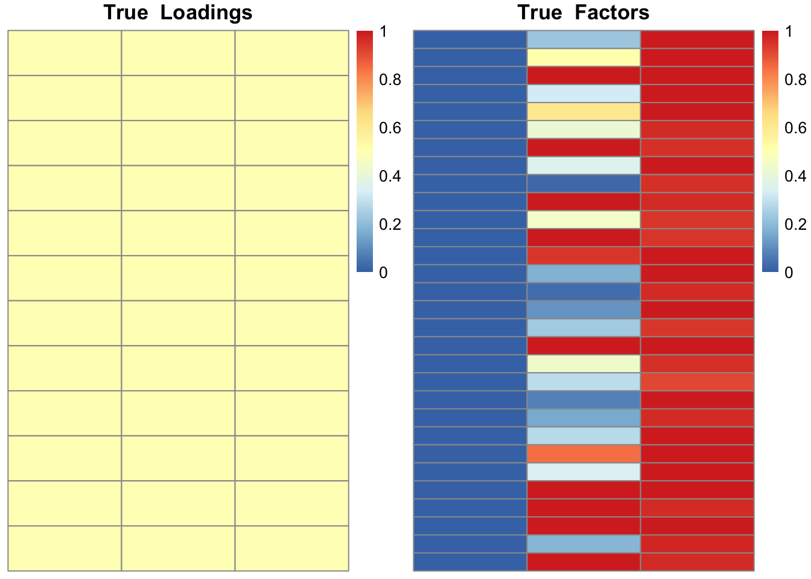
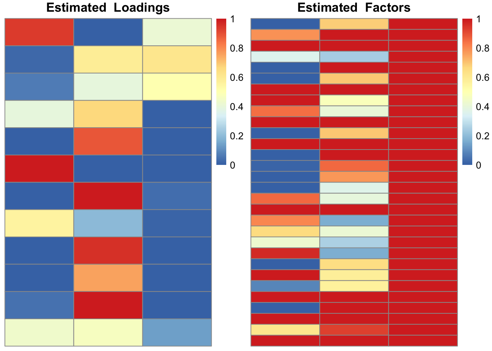
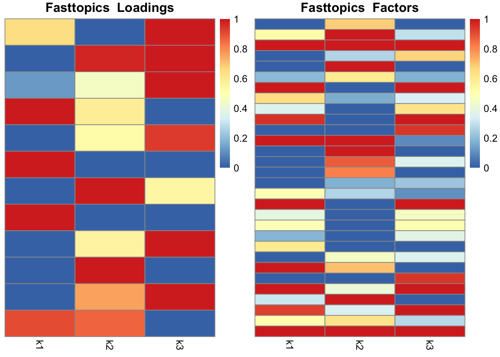
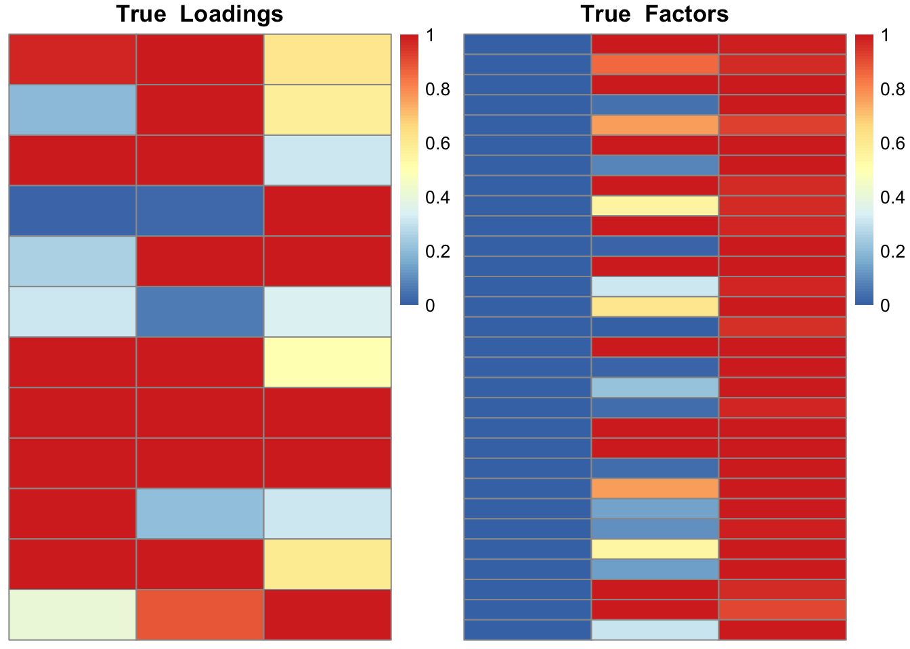
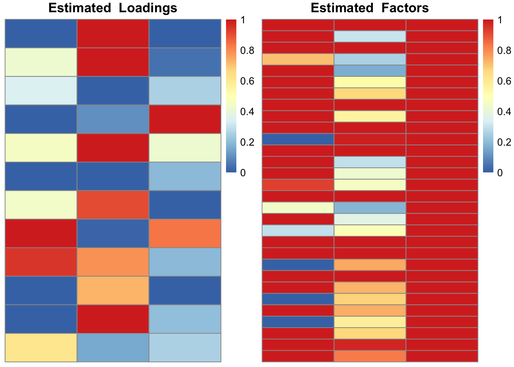
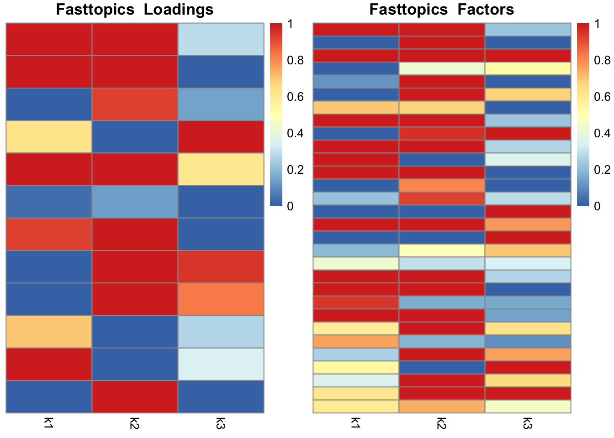

Main Code Implementation for Model A, M=1 Case
Explanation for ebpmf_modelA_m1 steps 1-3
Similar to E-step in EM, we derived from “Update Z” section the following result:
\[ \mathbb{E}_q[z_{ijk}] = \frac{x_{ij}}{\sum_{k=1}^K h_{ik}w_{jk}} h_{ik} w_{jk} \] Let \(A_{ij}\) denote \(\frac{x_{ij}}{\sum_{k=1}^K h_{ik}w_{jk}}\). Then,
\[ \sum_{j=1}^p \mathbb{E}_q [z_{ijk}] = h_{ik} \sum_{j=1}^p A_{ij} w_{jk} \]
\[ \sum_{i=1}^n \mathbb{E}_q [z_{ijk}] = w_{jk} \sum_{i=1}^n A_{ij}h_{ik} \]
Reference to writeup for ebpmf_modelA_m1 steps 4, 5
Step 4 updates W according to equation 19 in writeup. \[ w_{jk}^* = \frac{a_k + \sum_{i=1}^n \langle z_{ijk} \rangle}{b_k + \sum_{i=1}^n h_{ik}} \]
Step 5 updates H according equation 26 in writeup.
\[ \hat h_{ik} = \frac{\sum_{j=1}^p \langle z_{ijk} \rangle}{\sum_{j=1}^p \mathbb{E}_q[w_{jk}]} \]
Code
ebpmf_modelA_m1 <- function(X,
K=3,
a = c(1e-16, 1, 1000),
b = c(1e-16, 1, 1000),
max_iter = 50) {
n <- nrow(X)
p <- ncol(X)
# Initialize H and W with random values [0,1]
H <- matrix(runif(n * K, 0, 1), nrow = n, ncol = K)
W <- matrix(runif(p * K, 0, 1), nrow = p, ncol = K)
# Extract sparse matrix components for easy index access when working with H or W
X_i <- X@i + 1 # 0-indexed -> 1-indexed rows
X_p <- X@p # Column pointers
X_j <- rep(seq_along(X_p[-1]), diff(X_p)) # Reconstruct columns
X_val <- X@x # Store nonzero values
for (iter in 1:max_iter) {
# 1. Compute expected Poisson rates
# Denoted as lambda_{ij}, but actually \sumk \langle z_{ijk} \rangle
# Lambda_ij = \sum_k h_ik w_jk
Lambda_val <- rowSums(H[X_i, , drop = FALSE] * W[X_j, , drop = FALSE])
# 2. Compute A_ij = X_ij / Lambda_ij
# A and X have same dimension: n x p
A_val <- X_val / (Lambda_val + 1e-20)
A <- sparseMatrix(i = X_i, j = X_j, x = A_val, dims = c(n, p))
# 3. Compute expected Z (similar to E-step)
Z_H <- H * as.matrix(A %*% W) # This is \sumj E_q[Z]
Z_W <- W * as.matrix(crossprod(A, H)) # This is \sumi E_q[Z]
######
# Check dimensions
# print(length(a))
# print(dim(Z_H)) nk
# print(dim(Z_W)) pK
# Sweep demonstrations
# print(Z_W)
# print(a)
# print(sweep(Z_W, 2, a, "+"))
######
# 4. Update W (Equation 19)
sum_H <- colSums(H)
W_new <- sweep(sweep(Z_W, 2, a, "+"), 2, b + sum_H, "/") # Add k-length 'a' to each row of k entries, divide by (b + sum_H) for each row
# 5. Update H (Equation 26)
sum_W <- colSums(W_new)
H_new <- sweep(Z_H, 2, sum_W, "/")
# Early stop?
delta <- max(abs(H - H_new), abs(W - W_new))
if (delta < 1e-6) { cat("Converged at iter", iter, "\n"); break }
# Apply updates
H <- H_new
W <- W_new
}
return(list(H = H, W = W))
}# Experiment 1:
# When randomness in X comes from
# 1) Randomness in factors W
# k=1: W_{jk} \sim Gamma(shape=1e-16, rate = 1/shape)
# k=2: W_{jk} \sim Gamma(shape=1, rate = 1/shape)
# k=3: W_{jk} \sim Gamma(shape=1000, rate = 1/shape)
# 2) X \sim Poisson generation process
# NOT randomness in loadings H. H_{ik} = 0.5
data <- general_load(data_type="modelA_unifL")
plot_lf(data$L, data$F, "True")
X <- Matrix(as.matrix(data$X), sparse = TRUE)
res = ebpmf_modelA_m1(X, max_iter=50)
plot_lf(res$H, res$W, "Estimated")
fast_fit = fastTopics::fit_poisson_nmf(X,3, numiter=50)Initializing factors using Topic SCORE algorithm.
Initializing loadings by running 10 SCD updates.
Fitting rank-3 Poisson NMF to 12 x 30 sparse matrix.
Running at most 50 SCD updates, without extrapolation (fastTopics 0.6-192).plot_lf(fast_fit$L, fast_fit$F, "Fasttopics")
# Experiment 2:
# Some randomness in loadings H as well, since H_{ik} \sim Gamma(1,1)
data <- general_load(data_type="modelA_gammashape1L")
plot_lf(data$L, data$F, "True")
X <- Matrix(as.matrix(data$X), sparse = TRUE)
res = ebpmf_modelA_m1(X, max_iter=50)
plot_lf(res$H, res$W, "Estimated")
fast_fit = fastTopics::fit_poisson_nmf(X,3, numiter=50)Initializing factors using Topic SCORE algorithm.
Initializing loadings by running 10 SCD updates.
Fitting rank-3 Poisson NMF to 12 x 30 sparse matrix.
Running at most 50 SCD updates, without extrapolation (fastTopics 0.6-192).plot_lf(fast_fit$L, fast_fit$F, "Fasttopics")